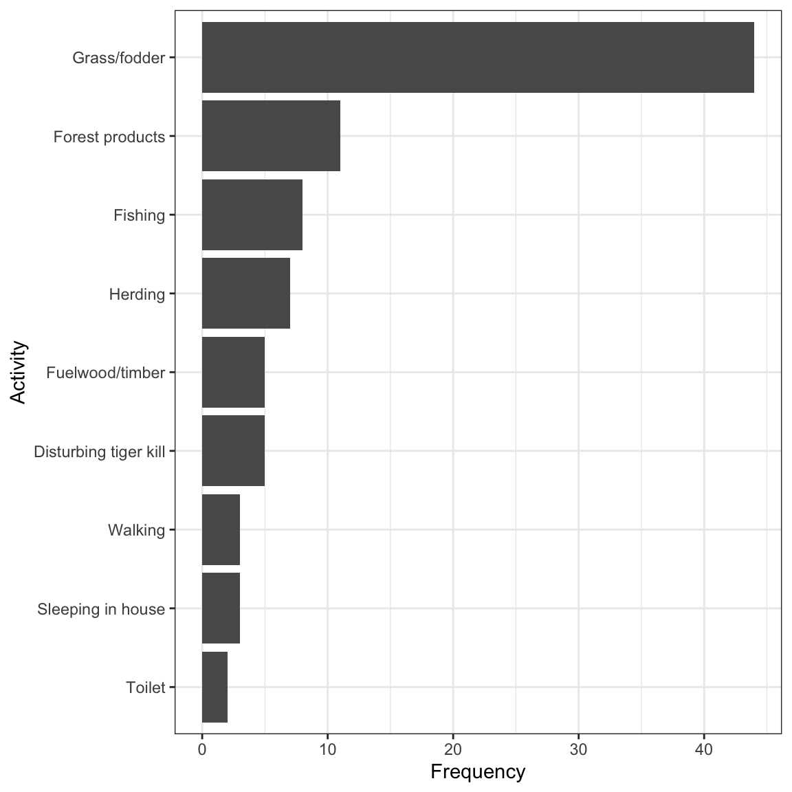
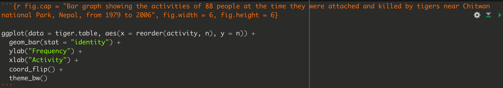
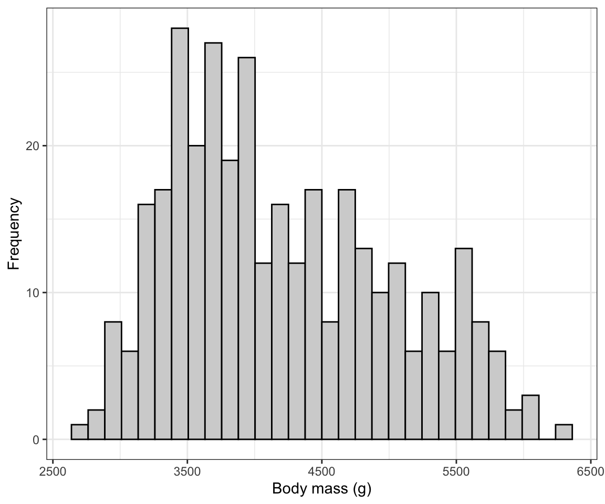
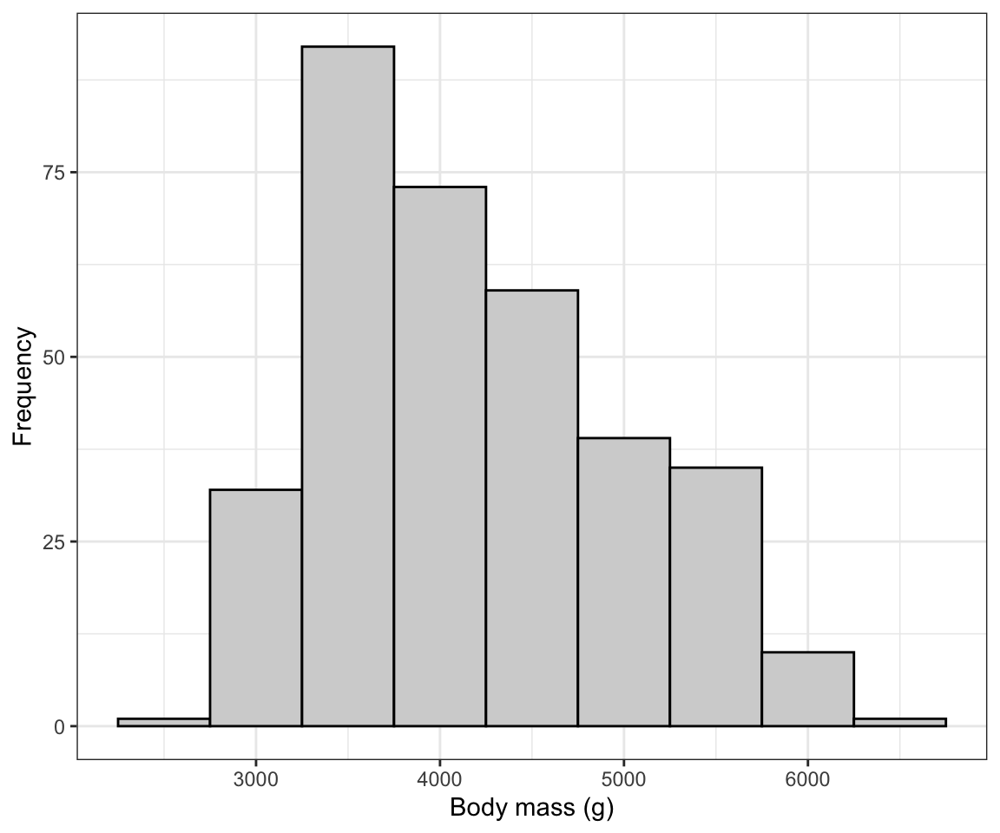

library(dplyr)
library(ggplot2)
library(readr)
library(palmerpenguins)
library(skimr)
library(knitr)
library(janitor)
library(biol202)5 Visualizing a single variable
Tutorial learning objectives
In this tutorial you will:
- Revisit how to import data and get an overview of a “tibble” object
- Learn how to construct a frequency table
- Learn how to include a table caption
- Learn how to visualize the frequency distribution of a single categorical variable using a bar graph
- Learn how to visualize the frequency distribution of a single numerical variable using a histogram
- Learn how to describe a histogram
Background
How to best visualize data depends upon (i) whether the data are categorical or numerical, and (ii) whether you’re visualizing one variable or associations between two variables (we don’t cover how to visualize associations between more than two variables). This tutorial focuses on visualizing a single variable.
When visualizing a single variable, we aim to visualize a frequency distribution. A frequency distribution is the frequency with which unique data values occur in the dataset.
- If the variable is categorical, we can visualize the frequency distribution using a bar graph
- If the variable is numeric, we visualize the frequency distribution using a histogram
In this tutorial you’ll learn to construct and interpret each of these types of visualization.
5.1 Load packages and import data
In this tutorial we will make use of the dplyr, ggplot2 and readr packages, as well as the skimr package. You’ll also use the palmerpenguins package that provides some penguin-related data to work with (see this website for more info). Lastly, you’ll use the knitr package for helping create nice tables. The latter package should have come installed with RStudio, so check the “packages” tab in the bottom-right pane of RStudio to see if it’s already installed. If it’s not, then install it following the instructions you saw earlier.
WarningAlways load
palmerpenguins before using penguins
R version 4.5 added its own dataset called penguins, which is built into R. It holds similar data but uses shorter variable names — bill_len instead of bill_length_mm, bill_dep instead of bill_depth_mm, and so on.
This matters because if you forget library(palmerpenguins), R will quietly hand you its own version instead of telling you anything is wrong. Your code will then fail with a confusing message like object 'bill_length_mm' not found, even though the penguins data appear to be right there.
The fix is simply to always run library(palmerpenguins) first, as in the chunk above.
And we will use the following datasets in this tutorial:
- the
penguinsdataset that is available as part of thepalmerpenguinspackage - the
tigerdeaths.csvfile contains data associated with example 2.2A in the Whitlock and Schluter text - the
birds.csvfile contains counts of different categories of bird observed at a marsh habitat
Note
From here on, course datasets come from the biol202 package: load one with data() followed by its name, for example data(birds). Use ?birds to read its documentation.
If you ever want to practise importing instead, CSV copies of the same datasets live at “https://raw.githubusercontent.com/ubco-biology/BIOL202-lab-tutorials/main/csv_data/” — append the file name to that path, for example “…/csv_data/birds.csv”, and import it with read_csv as shown in a previous tutorial.
5.2 Get an overview of the data
The penguins object is a tibble, with each row representing a case and each column representing a variable. Tibbles can store a mixture of data types: numeric variables, categorical variables, logical variables etc… all in the same object (as separate columns). This isn’t the case with other object types (e.g. matrices).
We’ll get an overview of the data using the skim_without_charts function, as we learned in the Preparing and Importing Tidy Data tutorial:
penguins %>%
skim_without_charts()| Name | Piped data |
| Number of rows | 344 |
| Number of columns | 8 |
| _______________________ | |
| Column type frequency: | |
| factor | 3 |
| numeric | 5 |
| ________________________ | |
| Group variables | None |
Variable type: factor
| skim_variable | n_missing | complete_rate | ordered | n_unique | top_counts |
|---|---|---|---|---|---|
| species | 0 | 1.00 | FALSE | 3 | Ade: 152, Gen: 124, Chi: 68 |
| island | 0 | 1.00 | FALSE | 3 | Bis: 168, Dre: 124, Tor: 52 |
| sex | 11 | 0.97 | FALSE | 2 | mal: 168, fem: 165 |
Variable type: numeric
| skim_variable | n_missing | complete_rate | mean | sd | p0 | p25 | p50 | p75 | p100 |
|---|---|---|---|---|---|---|---|---|---|
| bill_length_mm | 2 | 0.99 | 43.92 | 5.46 | 32.1 | 39.23 | 44.45 | 48.5 | 59.6 |
| bill_depth_mm | 2 | 0.99 | 17.15 | 1.97 | 13.1 | 15.60 | 17.30 | 18.7 | 21.5 |
| flipper_length_mm | 2 | 0.99 | 200.92 | 14.06 | 172.0 | 190.00 | 197.00 | 213.0 | 231.0 |
| body_mass_g | 2 | 0.99 | 4201.75 | 801.95 | 2700.0 | 3550.00 | 4050.00 | 4750.0 | 6300.0 |
| year | 0 | 1.00 | 2008.03 | 0.82 | 2007.0 | 2007.00 | 2008.00 | 2009.0 | 2009.0 |
Optionally, we can also get a view of the first handful of rows of a tibble by simply typing the name of the object on its own, and hitting return:
penguins
#> # A tibble: 344 × 8
#> species island bill_length_mm bill_depth_mm flipper_length_mm body_mass_g
#> <fct> <fct> <dbl> <dbl> <int> <int>
#> 1 Adelie Torgersen 39.1 18.7 181 3750
#> 2 Adelie Torgersen 39.5 17.4 186 3800
#> 3 Adelie Torgersen 40.3 18 195 3250
#> 4 Adelie Torgersen NA NA NA NA
#> 5 Adelie Torgersen 36.7 19.3 193 3450
#> 6 Adelie Torgersen 39.3 20.6 190 3650
#> 7 Adelie Torgersen 38.9 17.8 181 3625
#> 8 Adelie Torgersen 39.2 19.6 195 4675
#> 9 Adelie Torgersen 34.1 18.1 193 3475
#> 10 Adelie Torgersen 42 20.2 190 4250
#> # ℹ 334 more rows
#> # ℹ 2 more variables: sex <fct>, year <int>In a previous tutorial you learned the important information to look for when getting an overview of a dataset using the skim_without_charts function.
Note
TIP It’s important to check whether there are any missing values for any of the variables in your dataset. In the penguins dataset, you’ll see from the skim_without_charts output that there are 344 cases (rows), but (as an example) there are 2 missing values for each of the 4 morphometric variables, including body mass. You need to take note of this so that you report the correct sample sizes in any table or figure captions!
Once you have gotten an overview your dataset’s structure and contents, the next order of business is always to visualize your data using graphs and sometimes tables.
CautionActivity
Import and data overview: Following the instructions provided in previous tutorials, import the tigerdeaths.csv and birds.csv datasets, and get an overview of each of those datasets.
5.3 Create a frequency table
Sometimes when the aim is to visualize a single categorical variable, it’s useful to present a frequency table. If your variable has more than, say, 10 unique categories, then this approach can be messy, and instead one should solely create a bar graph, as described in the next section.
Many straightforward operations like tabulation and calculating descriptive statistics can be done using the functionality of the dplyr package (see the cheatsheet here).
Here, we’ll use this functionality to create a frequency table for a categorical variable.
We’ll demonstrate this using the tigerdeaths.csv dataset that you should have imported as part of a suggested activity in the previous section, using code like this:
Note
TIP Some datasets that we use for tutorials need to be imported into an object in your workspace. This is the case with the tigerdeaths dataset, and the code for importing the data into a tibble is below. Other datasets, like the penguins dataset, exist within packages (palmerpenguins), and their objects are already created for you. Most of the time, and particularly for your lab assignments, you need to import a dataset and create an object, as we do below.
# here we import the data from a CSV file and put it into a "tibble" object called "tigerdeaths"
data(tigerdeaths)You would also have gotten overview of the data as part of the activity, using the skim_without_charts function. This would have shown that the activity variable is of type “character”, which tells us it is a categorical variable, and that it includes 9 unique categories. We also would have seen that there are 88 cases (rows) in the dataset.
Let’s provide the code to generate the frequency table, using the pipes “%>%” approach we learned about in an earlier tutorial. We’ll assign the output to a new object that will hold the frequency table. We’ll name the object “tiger.table”. Note that we won’t yet view the table here… we’ll do that next.
We’ll provide the code first, then explain it step-by-step after.
Here’s the code for creating the frequency table and assigning it to a new object named “tiger.table”:
tiger.table <- tigerdeaths %>%
count(activity, sort = TRUE) %>%
mutate(relative_frequency = n / sum(n)) %>%
adorn_totals()- The first line provides the name of the object (tibble) that we’re going to create (here, “tiger.table”), and use the assignment operator (“<-”) tell R to put whatever the output of our operation is into that object. The next part of the first line provides the name of the object that we’re going to do something with, here “tigerdeaths”. The “%>%” tells R that we’re not done yet, and there’s more lines of code to come.
- The second line uses the
countfunction from thedplyrpackage to tally the unique values of a variable, in this case the “activity” variable. It also takes an argument “sort = TRUE”, telling it to sort the counts in descending order (the default sort direction). Then another “%>%” to continue the code.. - The last line uses
mutatefunction from thedplyrpackage that creates a new variable, and the arguments provided in the parentheses tells R what that variable should be called, here “relative_frequency”, and then how to calculate it. - The
nin the third line is a function that tallies the sample size or count of all observations in the present category or group, and then thesum(n)sums up the total sample size. Thus,n / sum(n)calculates the relative frequency (equivalent to the proportion) of all observations that are within the given category
- the
adorn_totalsin the last line is a function from thejanitorpackage that enables adding row and / or column totals to tables (see the help for this function for more details)
Tip
Try figuring out how you would change the last line of code in the chunk above so that the table showed the percent rather than the relative frequency of observations in each category
Now that we’ve created the frequency table, let’s have a look at it.
In a supplementary tutorial, you’ll find instructions on how to create fancy tables for output. Here, you’ll learn the basics.
For our straightforward approach to tables with table headings (or captions), we’ll use the kable function that comes with the knitr package, using the pipe approach:
tiger.table %>%
kable(caption = "Frequency table showing the activities of 88 people at the time they were attacked and killed by tigers near Chitwan national Park, Nepal, from 1979 to 2006", digits = 3)| activity | n | relative_frequency |
|---|---|---|
| Grass/fodder | 44 | 0.500 |
| Forest products | 11 | 0.125 |
| Fishing | 8 | 0.091 |
| Herding | 7 | 0.080 |
| Disturbing tiger kill | 5 | 0.057 |
| Fuelwood/timber | 5 | 0.057 |
| Sleeping in house | 3 | 0.034 |
| Walking | 3 | 0.034 |
| Toilet | 2 | 0.023 |
| Total | 88 | 1.000 |
The key argument to the kable function is the table object (which here we provide before the pipe), and the table heading (caption).
Notice that this produces a nicely formatted table with an appropriately worded caption. The argument “digits = 3” tells it to return numeric values to 3 digits in the table.
You now know how to create a frequency table for a categorical variable!
Note
Your table caption won’t include a number (e.g. Table 1) until you actually knit to PDF. Be sure to check your PDF to ensure that the table captions show up, and are numbered!
CautionActivity
Frequency table: Try creating a frequency table using the birds dataset, which includes data about four types of birds observed at a wetland.
5.4 Create a bar graph
We use a bar graph to visualize the frequency distribution for a single categorical variable.
We’ll use the ggplot approach with its geom_bar function to create a bar graph. The ggplot function comes with the ggplot2 package.
To produce the bar graph, we use a frequency table as the input. Thus, let’s repeat the creation of the “tiger.table” from the preceding section, but this time we exclude the adorn_totals line of code, because we don’t want the “total” row to be plotted in the bar graph.
tiger.table <- tigerdeaths %>%
count(activity, sort = TRUE) %>%
mutate(relative_frequency = n / sum(n))Recall that the “tiger.table” is a sort of summary presentation of the “activity” variable:
tiger.table
#> # A tibble: 9 × 3
#> activity n relative_frequency
#> <fct> <int> <dbl>
#> 1 Grass/fodder 44 0.5
#> 2 Forest products 11 0.125
#> 3 Fishing 8 0.0909
#> 4 Herding 7 0.0795
#> 5 Disturbing tiger kill 5 0.0568
#> 6 Fuelwood/timber 5 0.0568
#> 7 Sleeping in house 3 0.0341
#> 8 Walking 3 0.0341
#> 9 Toilet 2 0.0227It shows the total counts (frequencies) of individuals in each of the nine “activity” categories.
And although in the code chunk below you’ll see that we provide an “x” and a “y” variable for creating the graph, remember that we’re really only visualizing a single categorical variable.
Let’s provide the code first, and explain after.
ggplot(data = tiger.table, aes(x = reorder(activity, n), y = n)) +
geom_bar(stat = "identity") +
ylab("Frequency") +
xlab("Activity") +
coord_flip() +
theme_bw()
All figures produced using the ggplot2 package start with the ggplot function. Then the following arguments:
- The tibble (or dataframe) that holds the data (“data = tiger.table”)
- An “aes” argument (which stands for “aesthetics”), within which one specifies the variables to be plotted; here we’re plotting the frequencies from the “n” variable in the frequency table as the “y” variable, and the “activity” categorical variable as the “x” variable. To ensure the proper sorting of the bars, we use the
reorderfunction, telling R to reorder theactivitycategories according to the frequencies in thenvariable - Then there’s a plus sign (“+”) to tell the
ggplotfunction we’re not done yet with our graph - there are more lines of code coming (think of it as ggplot’s version of the “pipe”) - Then the type of graph, which uses a function starting with “geom”; here we want a bar graph, hence
geom_bar - The
geom_barfunction has its own argument: “stat = ‘identity’” tells it just to make the height of the bars equal to the values provided in the “y” variable, heren. - The
ylabfunction sets the y-axis label - The
xlabfunction sets the x-axis label - The
coord_flipfunction tells it to rotate the graph horizontally; this makes it easier to fit the activity labels on the graph - Then the
theme_bwfunction indicates we want a simple black-and-white theme
There you have it: a nicely formatted bar graph!
REMINDER Don’t forget to include a good figure caption! Here’s a snapshot of the full code chunk that produced the bar graph above:

CautionActivity
Bar graph: Try creating a bar graph using the birds dataset, which includes data about four types of birds observed at a wetland.
5.5 Create a histogram
A histogram uses the area of rectangular bars to display the frequency distribution (or relative frequency distribution) of a numerical variable.
We’ll use ggplot to create a histogram, and we’ll again use the penguins dataset.
We’ll give the code first, then explain below:
ggplot(data = penguins, aes(x = body_mass_g)) +
geom_histogram(colour = "black", fill = "lightgrey") +
xlab("Body mass (g)") +
ylab("Frequency") +
theme_bw()
The syntax follows what was seen above when creating a bar graph, but:
- Here we have only a single variable “x” variable,
body_mass_gto provide theaesfunction. - We use the
geom_histogramfunction, which has its own optional arguments:- the “color” we want the outlines of each bar in the histogram to be
- the “fill” colour we want the bars to be
You can also specify the “bin width” that geom_histogram uses when generating the histogram. Notice above that we got a message stating:
## `stat_bin()` using `bins = 30`. Pick better value with `binwidth`.It’s telling us that there’s probably a better bin width to use. The trick is to not have to small a bin width, such that you end up with too many bars in your histogram (giving too much detail in the frequency distribution), and to not have too large a bin width such that you have too few bars in your histogram (giving too little detail).
The hist function that comes with base R (so no need to load a package) has an algorithm that typically chooses good bin widths. To remove some of the subjectivity from this procedure, let’s leverage that function to figure out the best bin widths.
We’ll provide the code then explain after:
penguins.hist.info <- hist(penguins$body_mass_g, plot = FALSE)In the chunk above, we have:
- The “penguins.hist.info” is the name we’ll give to the object we’re going to create, and the assignment operator “<-” is telling R to put whatever the output from the function is into that new object
- The
histfunction takes the variable you want to generate a histogram function for. And in this case, it’s thebody_mass_gvariable in thepenguinstibble. - The dollar sign allows you to specify the tibble name along with the variable name: “penguins$body_mass_g”.
- The “plot = FALSE” tells the function we don’t wish to produce the actual histogram, and as a consequence the function instead gives us the information that would have gone into creating the histogram, including for example the break points for the histogram bins. It packages this information in the form of a “list”, which is one type of object.
Let’s look at the info stored in the list object:
penguins.hist.info
#> $breaks
#> [1] 2500 3000 3500 4000 4500 5000 5500 6000 6500
#>
#> $counts
#> [1] 11 67 92 57 54 33 26 2
#>
#> $density
#> [1] 6.432749e-05 3.918129e-04 5.380117e-04 3.333333e-04 3.157895e-04
#> [6] 1.929825e-04 1.520468e-04 1.169591e-05
#>
#> $mids
#> [1] 2750 3250 3750 4250 4750 5250 5750 6250
#>
#> $xname
#> [1] "penguins$body_mass_g"
#>
#> $equidist
#> [1] TRUE
#>
#> attr(,"class")
#> [1] "histogram"We won’t worry about all the information provided here. Instead just notice that the first variable in the list is “breaks”. Specifically, this provides us all the “break points” for the histogram for the given variable; break points are the values that delimit the bins for the histogram bars.
That’s the information we can use to get the ideal bin width: the difference between consecutive breaks is our desired bin width!
In this example it’s easy to see that the bin width was 500. But lets provide code to calculate it and thus make sure it’s reproducible. We simply need to calculate the difference between any two consecutive break points (they will all be equal in magnitude):
penguins.hist.info$breaks[2] - penguins.hist.info$breaks[1]
#> [1] 500The above code simply asks R to calculate the difference (using the subtraction sign) between the second element of the “breaks” variable, denoted using the square brackets “breaks[2]”, and the first element “breaks[2]”.
And R returns 500. That’s the bin width we want to use!
So let’s edit the original histogram code to include the “binwidth” argument in the geom_histogram function, as follows:
ggplot(data = penguins, aes(x = body_mass_g)) +
geom_histogram(binwidth = 500, colour = "black", fill = "lightgrey") +
xlab("Body mass (g)") +
ylab("Frequency") +
theme_bw()
There we go! Now we need to learn how to describe and interpret a histogram…
5.6 Describing a histogram
Things to note in your description of a histogram:
- Is it roughly symmetric or is it negatively or positively skewed?
- Is it roughly bell-shaped?
- Outliers - are there observations (bars) showing up far from the others?
- Are there multiple modes?
So, let’s look again at the penguin body mass histogram, and provide a description thereafter:
ggplot(data = penguins, aes(x = body_mass_g)) +
geom_histogram(binwidth = 500, colour = "black", fill = "lightgrey") +
xlab("Body mass (g)") +
ylab("Frequency") +
theme_bw()
The histogram is moderately positively skewed and thus asymmetric, with a single mode near 3500g. There are no obvious outliers in the distribution.
CautionActivity
Histogram: Create a histogram of the bill lengths of penguins in the penguins dataset, and include an appropriate figure caption. Then provide a description of what you see.